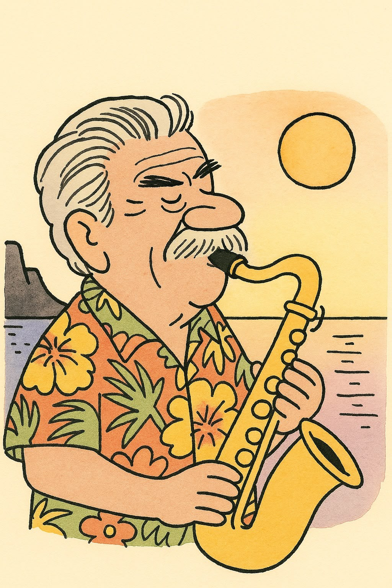

Heute feiern wir dich!
Für die coolste Dichterin, Sprachen-Weltmeisterin und Sonnenuntergangs-Genießerin.
🐚 Brunis Dichter-Ecke
Worte, so warm wie Sand unter den Füßen – und so klug wie ihre Verfasserin.
Gib ein beliebiges Wort ein (z. B. Sonne, Katze, Garten, Ibiza, Saxophon) – der Reim-O-Mat dichtet im Stil von Bruni.
Hier erscheint gleich ein kleines Strand-Gedicht …
Kannst du mit Bruni mithalten? (Spoiler: Niemand kann das.)
🎷 Featuring: Werner

Bruni lässt die Worte tanzen, Werner spielt aus vollem Herzen. Hawaiihemd und geschloss’ne Augen Töne, die zum Träumen taugen. Ein Ständchen voller Gefühl und Licht, das in die Seele hinein spricht, wenn leis der Tag im Meer versinkt und Werner sanft die Tasten klingt.
Ton an! 🔊